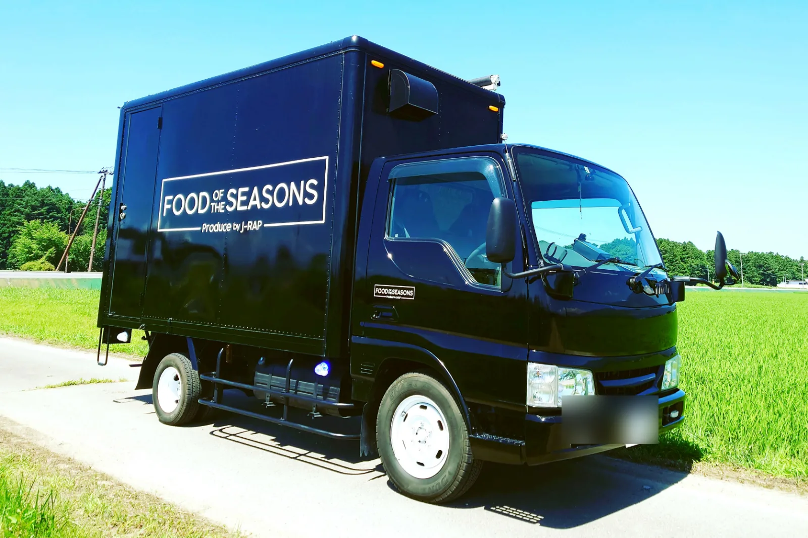
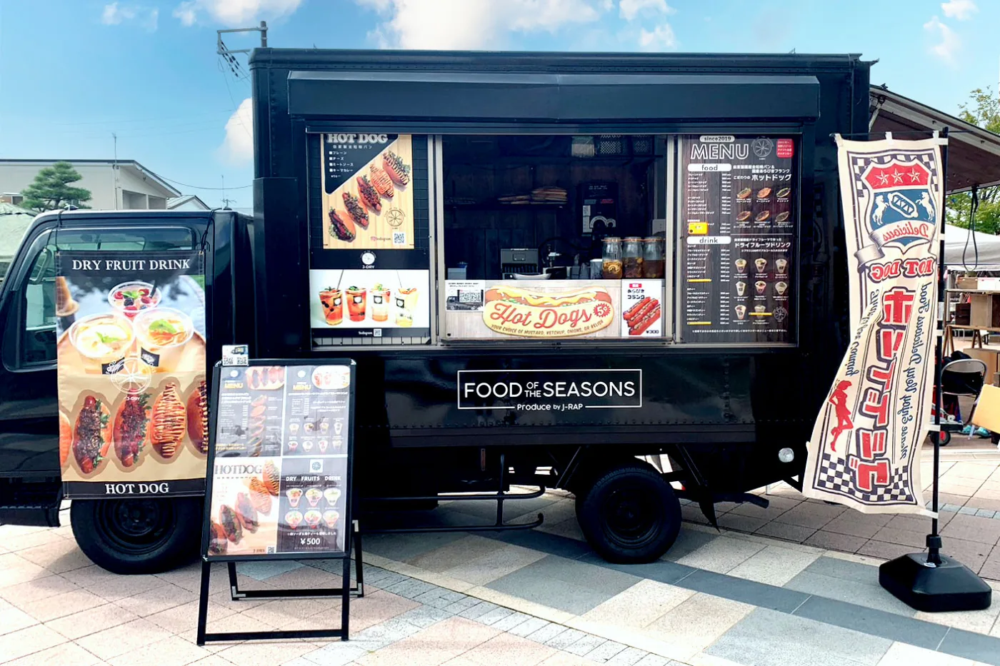
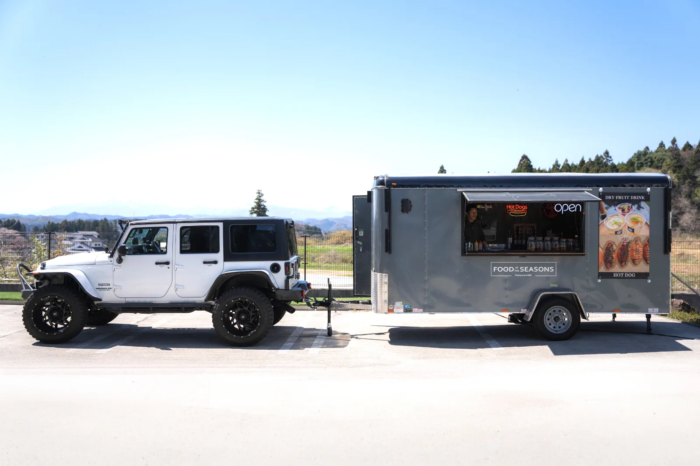
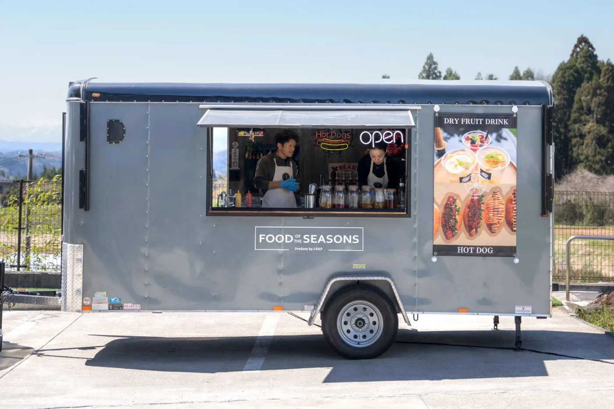
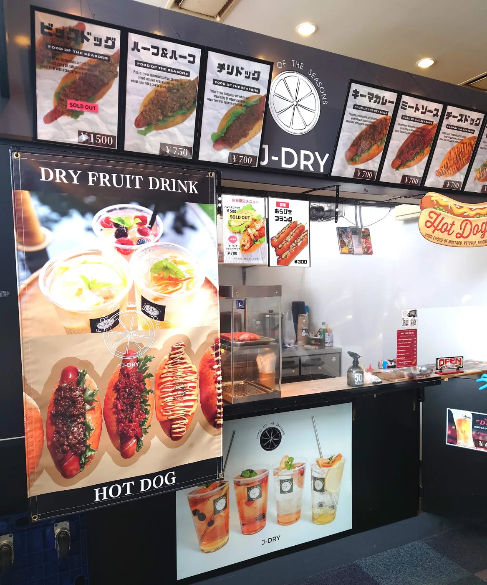

2019年の1号車から始まったJ-DRYのキッチンカー。国産原料・低温乾燥にこだわったドライフルーツドリンクを軸に、FOODメニューやテナント出店へと広がってきました。
2019年7月
須賀川市内の自社工場で加工した国産ドライフルーツを使って、果物の素材を生かした完全無添加ドライフルーツジュースの販売をスタート。旬の果物に問わずいつでも多種多様なドライフルーツドリンクが味わえる、新しいドリンクとしてオープンしました。


2023年4月
1号車でできなかった事を実現するためにオープンした2号車。ドリンクのみだったメニューにFOODを取り入れ、メインは自社で作っているオリジナルパンと自家製ソースのホットドッグを考案。キッチンカーでは難しいとされているソフトクリームの許可も取得しました。大きいトレーラーは中も広く迫力があり、お客様にも楽しんでいただけるよう店内はアメリカン雑貨で賑やかなイメージを演出。色々なメニューに挑戦しております。


2021年〜2025年
旧アルツ磐梯スキー場、現ネコママウンテン（南エリア）。例年12月〜3月の期間限定でテナント出店しています。キッチンカーと同様に、ドライフルーツドリンク・ホットドッグを販売しています。

最新の出店情報はInstagramでも発信しています。
Instagram @jdry.food